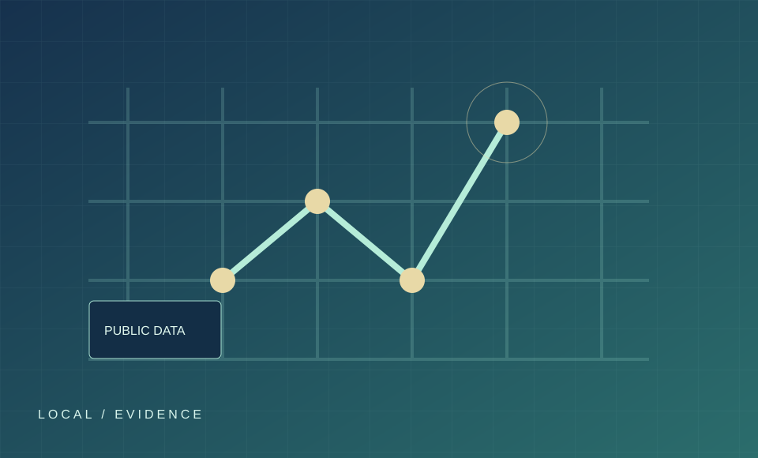

PROJECT 03 / PUBLIC DATA & LIVING LAB
전주시 공공데이터 기반 AI 리빙랩
전주시의 지역 문제를 공공데이터로 정의하고 분석 결과를 해결 방안으로 연결하는 주제 검토·기획 단계의 프로젝트입니다.
기획공공데이터지역 문제

01 / BACKGROUND
문제 배경
지역 문제를 다루려면 문제의 범위, 사용할 수 있는 공공데이터, 실제 이용자의 관점을 함께 검토해야 합니다. 현재는 전주시를 대상으로 주제를 검토하는 단계입니다.
02 / OBJECTIVE
기획 방향
공공데이터를 활용해 지역 문제를 설명하고, 분석 결과를 시민 참여형 검증과 연결할 수 있는 방안을 모색합니다. 구체적인 대상 문제와 성과 지표는 확정되지 않았습니다.
03 / METHODOLOGY
검토할 방법
- 대상 지역 문제와 이용자: [주제 확정 후 입력]
- 공공데이터 출처와 기준일: [자료 확보 후 입력]
- 현장 검증과 참여 방식: [기획 확정 후 입력]
04 / RESULTS & CONTRIBUTION
결과와 본인 기여
현재 확인된 범위는 주제 검토와 기획 방향입니다. 분석 수치, 실제 운영 결과, 개인별 수행 역할은 근거를 확인한 뒤 추가합니다.
05 / NEXT STEP
다음에 확인할 것
문제 범위와 공식 데이터 출처, 분석 방법, 이해관계자 참여 계획을 구체화합니다.